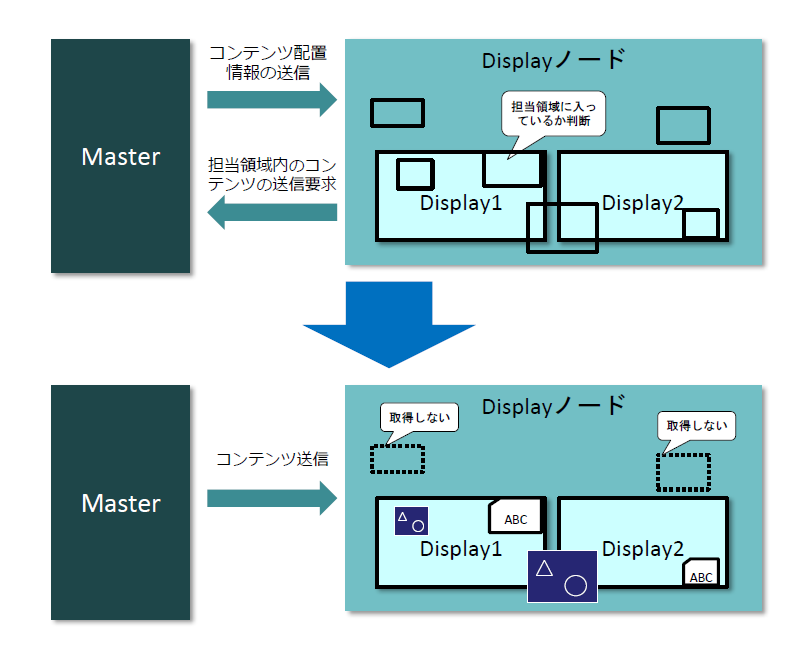
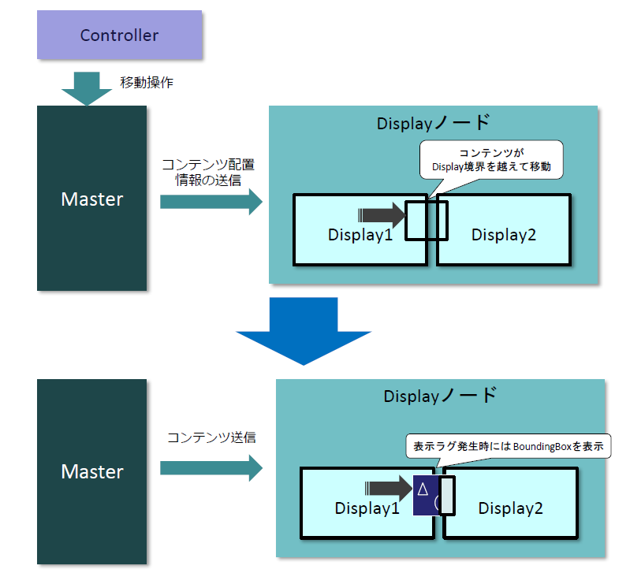
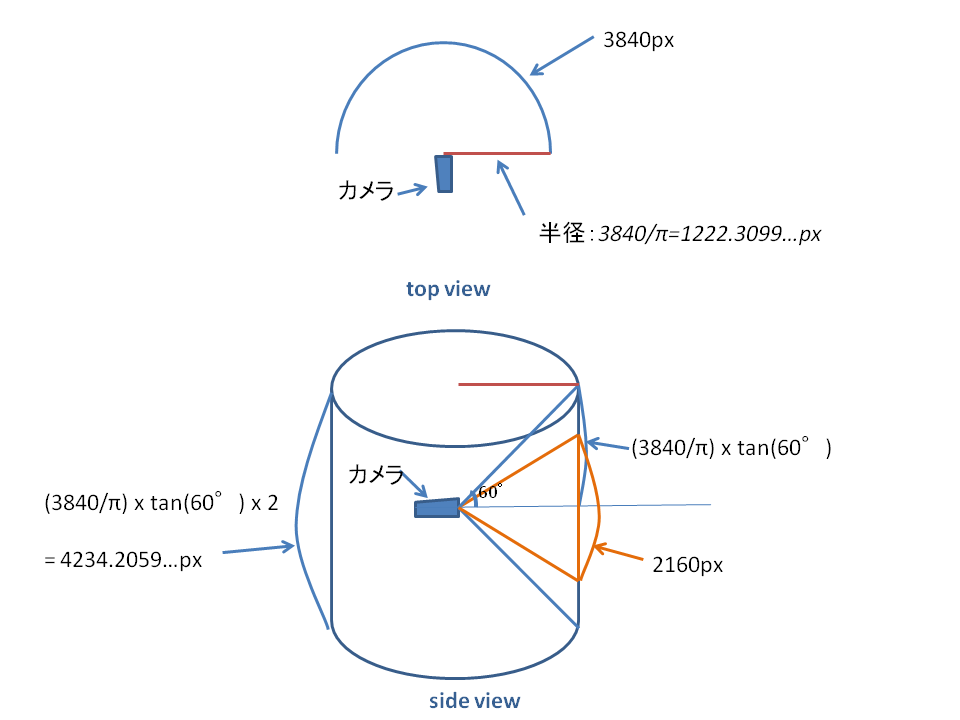
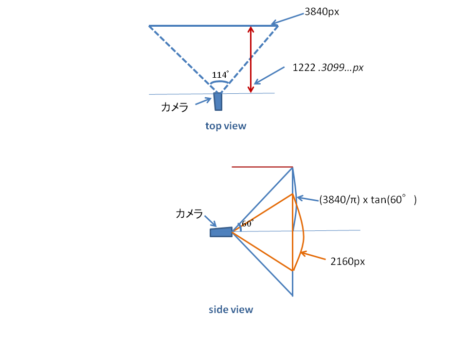
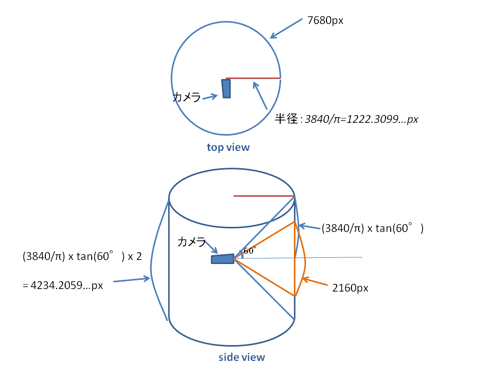
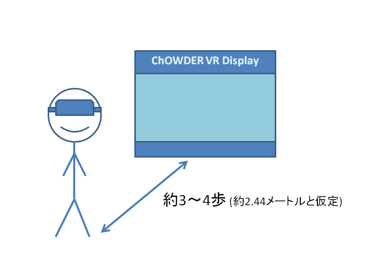

A display page is a page that can show the result of operations performed by a controller. All operations are performed by the controller.
When a display page is opened while the server is running, it is automatically registered with the server using the websocket API. After registration, the display page can be placed and moved by the controller in the same way as the contents, and the placement information is retained in the database even after the display page is closed, until it is explicitly deleted by the controller.
After receiving the content placement information, the display page judges whether the placement information is in the area of its own display and acquires only the content in the area of the display to speed up the display.

In addition, when the content is moved beyond the display boundary, the content acquisition is executed when it crosses the boundary, which causes a lag before the content is displayed. Therefore, the BoundingBox is displayed instead before the content is displayed.

In VR displays, there are three modes: plane mode, curved surface mode, and 360-degree mode, and their arrangements in the three-dimensional space are as follows.
In the curved surface mode, a cylindrical rectangular area with a horizontal viewing angle of approximately 180 degrees and a vertical viewing angle of 120 degrees is placed in front of the initial viewpoint position, and a display display area with an aspect ratio of 16:9 is provided within the rectangular area as a ChOWDER display, which is 3840px wide and 2160px high. The display is 3840px wide and 2160px high.

The height of the rectangular area is about 4234px, and the background image for ChOWDER VR Display is displayed in the rectangular area.
In planar mode, a planar ChOWDER display is placed in front of the initial viewpoint position. The display is 3840px wide and 2160px high, and is positioned to provide a horizontal viewing angle of approximately 114 degrees and a vertical viewing angle of 120 degrees from the initial viewpoint position in static mode.

The 360-degree mode extends the curved surface mode to a 360-degree cylindrical area. Within the rectangular area, the display area is equivalent to 7680px wide and 2160px high.

On the VR display, each content is displayed in WebGL using the three.js library by the following means.
| Content type | Display method |
|---|---|
| Text | A text string rendered by html2canvas library is attached to a polygon in VR space as a texture image./td> |
| Still image | A texture image is pasted onto a polygon in the VR space. |
| WebRTC streaming video | WebRTC Streaming Video Streaming video sent via WebRTC is captured via video tag and pasted onto polygons in the VR space as a video texture. The audio is handled in the same way as normal WebRTC streaming. |
| iTowns-based 3D WebGIS | Captures the streaming contents of the canvas using html and pastes them as video textures on polygons in the VR space. |
| Output HTML by Qgis2three plugin | The contents of the canvas are captured by streaming html and pasted to polygons in the VR space as a video texture. |
| Capture the contents of the canvas as an image and paste it to the polygon in the VR space as a texture. |
When the HMD is moved in the walking mode during the VR display, the camera position in the VR space is also moved according to the position coordinates of the HMD. The camera position in the VR space also moves according to the position coordinates of the HMD. Specifically, the position (in meters) obtained from the HMD is multiplied by 500 and used as the camera position. As a result, 1222/500 = about 2.44 meters to reach the display area. Assuming that a human's step length is about 70 cm, 2.44/0.7=3.48, which means that the camera can reach the display area in about 3 to 4 steps.
